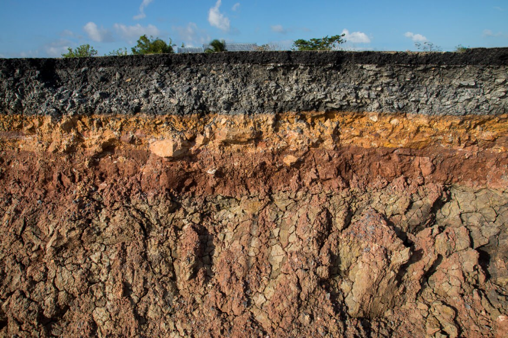
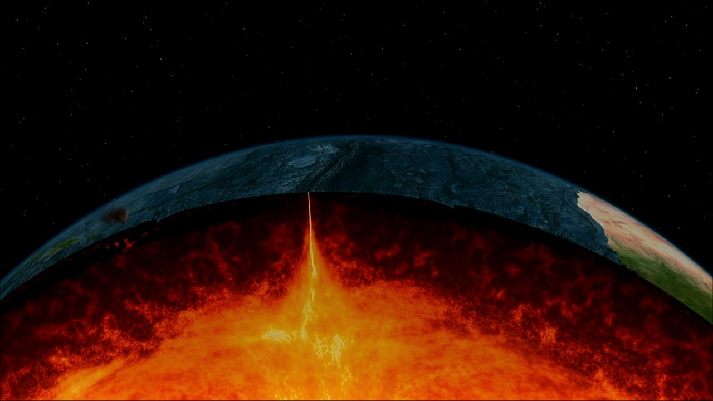
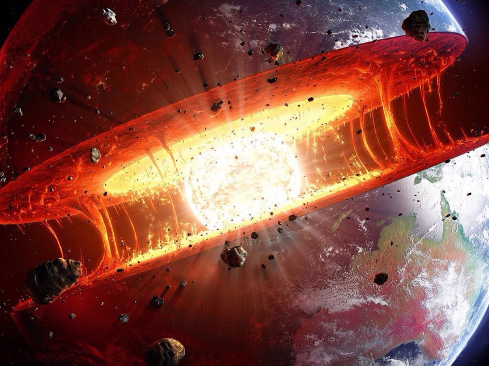

Кора
Это каменная оболочка, которая покрывает всю поверхность нашей планеты. Под океанами ее толщина не превышает 15-ти километров, а на материках — 75-ти. Если вернуться к аналогии с яйцом, то земная кора по отношению ко всей планете тоньше, чем яичная скорлупа. На долю этого слоя Земли приходится всего 5% объема и менее 1% массы всей планеты.
Мантия
Это слой силикатных пород между земной корой и внешним ядром. Она имеет массу 4,01 ×1024 кг (8,84 ×1024 фунта) и, таким образом, составляет 67% массы Земли. Его толщина составляет 2900 километров (1800 миль), что составляет около 84% объема Земли.
Ядро
Ядро Земли представляет собой невероятно горячий шар, который состоит на 85% из одного из наиболее распространенных элементов в галактике - железа, приблизительно 10% - никель и всего 5% - это другие неизвестные элементы. Радиус ядра составляет приблизительно 1300 км. О том, что ядро нашей земли состоит из двух слоев и большого количества железа свидетельствуют несколько фактов.